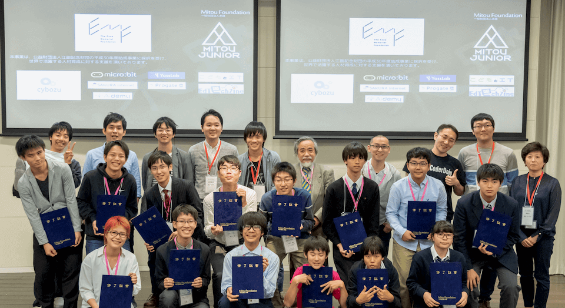

2018年度は、105件の応募中、12プロジェクト14人を採択しました。（☆は未踏ジュニアスーパークリエータに認定されました）
各プロジェクトの最終成果報告会における発表の模様は、後日動画として公開されます。
☆三橋 優希 UTIPS - 家事の情報共有サービス (安川PM)
☆平野正太郎 Let'sえいごパズル! - 変化するキューブで楽しく学ぶ英単語 (西尾PM)
佐藤 怜 スマイル会議室 - IoTで会議室の効率的な利用を (西尾PM)
☆末神 奏宙 Vreath - 暗号通貨の入手障壁を下げるための、独自合意アルゴリズムの開発 (鵜飼PM)
柴原 佳範 Corkboard - 位置的に管理するメモサービス (鈴木PM)
末田 貴一/高見 優/佐藤 美咲TouchBuy - VRにおけるECの在り方の模索 (関PM)
齋藤 尊 強化学習を用いたロボットサッカーシミュレーション (米辻PM)
☆藤本結衣 メモリーカプセル - カプセルを通して繋がるSNS (石井PM)
☆浪川 洪作 Sound in the forest - 複数のスマートフォンによる「動く音」の表現 (笹田PM)
☆西村 惟 Toubans! -LINEで設定・通知できる当番お知らせサービス (寺本PM)
武藤熙麟 Life Watcher - 急変する持病を持つ人のための警報システム (米辻PM)
2018年度までの成果は、こちらからご覧頂けます。 2017年度 2016年度
三橋 優希 (安川PM)
家事のやり方を共有するWEBサービスを開発。ほかの家のやり方を知ることで、よりよい家事をできるように支援。
Webサービスの開発が初めてでありながら、サービスのコンセプトやデザイン設計、実装や運用、ヒアリング用のテスト環境の構築などがすべて短期間で終えられた点を評価したい。 また、国内や海外のイベントへの積極的展示、言語別にデータを切り変えたヒアリング、ユーザーと対話・協力しながら進めていくスタイルなど、１歩ずつではあるが確実にWebサービスを改善し続けていた点も評価したい。 自分は何をしたいのか」を大切にして今後も１歩ずつ進んでいって欲しい。
平野 正太郎 (西尾PM)
小学生が遊びながら英単語を学べる、赤外線通信ブロックとゲームを開発。
彼は応募以前から各種展示会で小学生向けデバイスの展示をしており、その経験から思いついたアイデアである。ブースト会議でのジュニアOBとの議論を通じて、当初の計画のLEDマトリクスよりも技術的難易度の高い液晶ディスプレイにチャレンジする決断をした。 解像度が高くなったことによるメモリ消費の増加や、赤外線通信の精度に悩まされながらも、小学生が実際に使えるものを作りあげた。実際のユーザの振る舞いを観察して知見を得るところまで限られた時間でやり遂げたことが素晴らしい。 これからも、どんどん作りたいものを作り、どんどん難しいことにチャレンジして欲しい。
佐藤 怜 (西尾PM)
IoTデバイスを用いて会議室予約や会議室内の備品の電源などを制御することで会議室の効率的利用を支援。
会議室に設置したセンサーとクラウド上のスケジュール管理サービスを連携させるプロジェクトである。ブースト会議の段階で立てた計画を、期間中に淡々と実行していった。IoTプロジェクトにつきもののトラブルに見舞われつつも、成果報告会までに無事完成させ、実際の会議室に設置する実験を行なった。 安定感のあるプロジェクト進行と成果報告で、会場からは「ぜひインターンに来て欲しい」という声が上がるほどであった。ただ、PMとしては、もっと不確実性にチャレンジするように干渉するべきだったかもしれないなと思っている。 今後もぜひ色々なことにチャレンジしていって欲しい。
末神 奏宙 (鵜飼PM)
誰もが簡単に仮想通貨を入手できる、新しいブロックチェーンを実現するための合意アルゴリズムを開発。
新しいブロックチェーンのコンセンサスアルゴリズムを実際に開発し、デモとして体験できるところまで持ってきたことだけで、十分に大きな評価に値する。今後は、Vreath上で動くDAppsを実現するために開発者を巻き込んでいく必要があるが、末神さんが持つ行動力と、ブロックチェーンに関する深い造詣、なによりも圧倒的な情熱があれば、世界をあっと驚かすようなプロジェクトに成長できる可能性を秘めているので、大人の声に惑わされずどんどん開発を進めていってほしい。
柴原 佳範 (鈴木PM)
使用者の記録や感情を蓄え変化する「森」を基調としたメモ帳アプリのデザインコンセプトを提案
箱庭を作るようにメモを画面の中の森に配置するという、既製のメモ帳アプリとは趣を異にするコンセプトを打ち出した。コーディングの学習や制作に十分な時間を割かなかったため実装には至らず、デザイン案の披露だけで終わってしまった。クリエータ個人のプレゼンテーションや図画の作成能力には目を見張るものがあるので、今後実際に動くものを作る能力を習得していければ鬼に金棒である。
末田 貴一/高見 優/佐藤 美咲 (関PM)
VR空間上でECサイトを提供する方法について、様々なプロトタイプを作りながら模索した。
VR空間では実際の店舗にいかなくても便利に買い物ができるのではないか？」というアイデアは多くの人が考えたことがあるだろう。しかしそのアイデアを実際に行動に移した人は多くない。彼らはVR空間上でのECについて仮説に基づいてプロトタイプを作りながら、その仮説を検証し、新たな仮説によって別のプロトタイプを作ることを3度繰り返した。一つ一つの品質は高くないがVR空間におけるECの可能性と課題を示した点は高く評価できる。今後は開発力を高め世の中に魅力的なプロダクトをどんどん出していってほしい。
齋藤 尊 (米辻PM)
強化学習を用いた、ロボットサッカーのプレイヤーの開発。
強化学習を用いたシミュレーションを使ってサッカー、しかも二足歩行ロボットでやる、という非常に大きく難しいテーマを選択し、強化学習のフレームを使って、ボールをゴールに運ぶエージェントや二足歩行で目的位置に向かうエージェントのトレーニングに取り組んだ。研究分野として新しい分野であり、色々な知識や実装能力が求められる課題に対して、チャレンジできた事、学習がうまくいかない場合に色々な仮説を立て、それを検証して改善した所については高く評価できる。これらはまだプロジェクト全体の一部でしかないが、ぜひこれからも拡張発展を期待したい。
藤本 結衣 (石井PM)
場所に紐付いて、仮想カプセルを埋め、それを掘り出すことのできるSNSを開発。
現代人は様々な事をSNSから学び発信し行動へと繋げている。SNSを通じ遠く珍しい体験と触れる我々は、身近にある発見、感動、体験を忘れていないだろうか。そんな問題にも関わらず、それさえもSNSで解決しようというこのプロジェクトは夢に溢れ、ワクワクとさせる。毎週自ら宣言した目標を着実にこなし開発の早かった藤本さんは実際に多くのユーザーテスト、改善を着実に繰り返した。自ら様々な方と交渉し、広げるための手段を着実にこなす行動力もプロジェクトを大きく進められた理由の一つだろう。この経験を通じて多くの人をワクワクさせるプロダクトを広げる未来を強く期待する。
浪川 洪作 (笹田PM)
複数のスマートフォン上のウェブブラウザをリアルタイム同期させ、立体音響を実現するシステムの開発。
浪川さんは、複数のスマートフォン（スマホ）を音源とする、新しい立体音響の表現に挑戦した。ウェブ技術のみを用いたヘテロジニアス分散リアルタイム同期という難しい課題に最後まで苦戦していたが、最終成果報告会では、持ち込んだ16台のスマホでの演奏、そして来場者のスマホを用いた100台弱での「風の音」のデモを成功させ、会場を沸かせた。目標はさらに大規模な実演ということで、まだ課題は多いが、ぜひ実現して欲しい。
西村 惟 (寺本PM)
掃除当番に代表される、学校での「当番」の任命や通知をLINE上でできるようにするサービスの開発。
ソフトウェアを開発するだけでなく、ユーザーのフィードバックをもとに改善のサイクルを回していった点が素晴らしい。 LINE ボットの仕組みは採択時点で既に動作していたため、未踏ジュニアではユーザーがボットを作成できるシステムの開発に挑戦した。実際に使ってもらうには UI を極力シンプルにする必要があったが、身近な課題から出発したアイデアだったため、地に足のついた開発が出来ていた。今後も興味の幅を広げて様々なことにチャレンジして行って欲しい。
河原 慶太郎 (和田PM)
写真を写すことで、そこに写った物体の名前を他の言語に翻訳するスマートフォンアプリの開発。
河原くんは写して翻訳という写真を写してそのもの名前を表示する、新しい翻訳の形を提示した。最初の提案時よりすでにデモを作ってきており、本人のデザインセンスと毎週の進捗、つくるということに対する好奇心と素早さには毎回驚かされた。画像から言葉という発想も素晴らしく、アンケートを60件取るといった行動力も評価したい。定めた方向性でどう実現するか、そのゴールを描けた時、さらに飛躍的にそして多くの人が惹かれるプロダクトになるだろう。そのセンスと好奇心でどこまでも突き進んでいってほしい。
武藤 熙麟 (米辻PM)
スマートウォッチ上で動作する、急変する持病を持つ人を助ける警報アプリの開発。
武藤君は自身の持つアレルギーにおける緊急時の対応の難しさと重要性について問題意識をもって、スマートウオッチを用いた異常状態の監視システムの可能性を検討したり、緊急事態におけるアラートを飛ばす仕組みについて検討を行い、いくつかのアプリを試作し、実験を行った。アプリ実装の経験はなかったが、新しい技術に対して勉強を行って、実装を進めるという所が出来ていた事、難しい領域に対して確固とした問題意識をもって取り組めた事は評価に値する。ぜひこれからも色々な視点を持って様々な課題に取り組んでみてほしい。